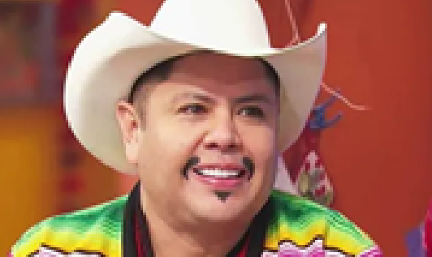
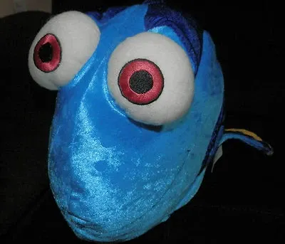

Capitalino que siempre ha vivido en el pegriloso Estado de México. Le gusta jugar todo el día y ya no sabe qué hacer con su vida. Solo piensa en Maincra y en Asesinar a la spiral. Es vegano y no se baña, pero no es otaku, solo medio hippie

Falso Yucateco que no acepta su acento. Es malo para jugar Maincra, Pokemon, Clash Royale y casi cualquier cosa xdddddd. Le gusta usar UwW de manera no irónica porque es otaku. Le gustan los Furros y es muuuuuy desepserante. Pero se interesa en tratar de intentar de estar bien con los demás. Ya lavate el Pollo y el Queso, por favor, Eduardo. ¡PERO EL POIO NO SE LAVA!